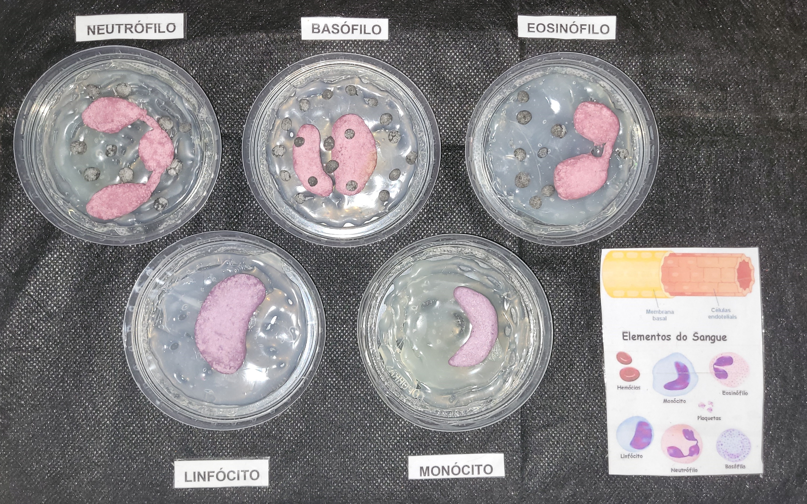

Leucócitos
Os leucócitos, também chamados de glóbulos brancos, são células incolores que atuam
principalmente na defesa do corpo, protegendo-o contra organismos invasores e desencadeando
respostas imunológicas.
Os leucócitos são produzidos na medula óssea, local onde a maioria
também amadurece. A partir desse local, eles são levados através dos vasos sanguíneos para
todo o corpo junto a outras células do sangue. O número normal de leucócitos por milímetro
cúbico de sangue em uma pessoa adulta é de 4 a 10 mil.

Imagem da biomaquete produzida referente aos tipos de leucócitos
Principais ações dos leucócitos
Fagocitose (defesa ativa): captura de partículas identificadas como antígenos (corpos estranhos). Nesse processo, as células sanguíneas de defesa englobam, digerem e destroem os microrganismos invasores;

Célula fagocitando antígeno
Defesa passiva: fabricação de anticorpos, proteínas especiais, para neutralizar os antígenos e as substâncias tóxicas produzidas pelos seres invasores ou presentes em alimentos e substâncias diversas;
Diapedese: propriedade de atravessar os vasos sanguíneos, sair pelas paredes capilares e migrarem para os tecidos próximos.
Tipos de leucócitos
Podemos dividir os leucócitos em dois grandes grupos: os granulócitos, grupo que possui grânulos no citoplasma, e os agranulócitos, grupo que não possui grânulos no citoplasma.
Leucócitos granulócitos
Neutroófilos
São glóbulos brancos que apresentam núcleos constituídos por dois a cinco lóbulos. São o tipo de leucócito mais abundante no sangue e constituem a primeira linha de reconhecimento e defesa contra agentes infecciosos. Apresentam a capacidade de sair do interior de vasos sanguíneos intactos (diapedese) e invadir tecidos para defender o organismo. São responsáveis por fagocitar organismos invasores, como bactérias, sendo importantes para a resposta inata.
Eosinófilos
Os eosinófilos possuem um núcleo bilobado e têm como principal função combater invasores de grande tamanho, como vermes e parasitas. Eles os combatem liberando proteínas tóxicas, íons peróxidos e enzimas, com o objetivo de destruir esses organismos. Apresentam como principal função fagocitar o complexo antígeno-anticorpo. Essas células aumentam quando o paciente apresenta reações alérgicas ou infecções parasitárias.
Basófilos
Possuem formato do núcleo irregular e atuam liberando histamina e heparina, substâncias que ajudam na dilatação dos vasos sanguíneos e na anticoagulação, respectivamente.
Leucócitos Agranulócitos
Linfócitos
Possuem núcleo esférico e podem ser classificadas em três tipos: linfócitos T, linfócitos B e células NK.
Linfócitos B: produz anticorpos que podem se ligar a patógenos, bloquear a invasão de patógenos, ativar o sistema complemento e aumentar a destruição de patógenos.
Linfócitos T: Os linfócitos T são originados a partir de células progenitoras linfoides encontradas na medula óssea. Essas células saem da medula em direção ao timo. É nesse órgão que as células sofrem o processo de maturação e diferenciam-se em células T helper, T supressora e T citotóxica.
Células NK(Natural Killer): As células matadoras naturais, fazem parte do sistema imune inato. Essas células são capazes de distinguir células infectadas ou tumorais e atacá-las sem necessidade de estímulo. Sua resposta imunitária é inespecífica, diferentemente dos linfócitos T e B, que produzem respostas pela ação de antígenos.

Tipos de linfócitos
Monócitos
São células grandes que possuem um único núcleo com formato de rim e compartilham a função de fagocitose dos neutrófilos, Estas células realizam diapedese e caem no tecido conjuntivo, onde se desenvolvem em macrófagos, células de alto poder fagocitário de microrganismos e células mortas.